VERification via Disagreement-Informed Coupled Thresholding
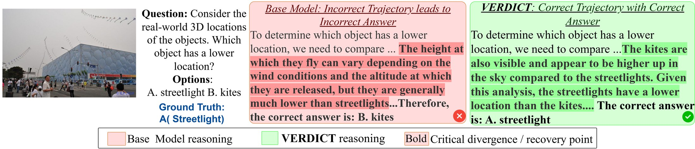
Reasoning chains fail gradually. A single locally plausible but visually ungrounded step is enough to send the whole chain to the wrong answer. VERDICT intercepts these steps as they are generated: three frozen, modality-specialized judges score every candidate continuation, and the structure of their disagreement, not just their average confidence, decides which step the chain takes next.
Multimodal large language models often generate reasoning chains containing subtle errors that lead to incorrect answers. Current verification approaches have notable limitations. Existing approaches either require expensive labelled supervision with inconsistent cross-task performance or aggregate scores from multiple sources by simple aggregations, missing a key insight: when these scores disagree, that disagreement itself carries important information about whether a reasoning step is truly valid or not. We formalise this as a coupled scoring problem among disparate, frozen verifiers, interpretable as a coordination game with a unique closed-form equilibrium where agreement signals valid steps while disagreement reveals instability. Towards this end, we propose a training-free domain-agnostic step-wise verification approach we call VERDICT: VERification via Disagreement-Informed Coupled Thresholding. To our knowledge, VERDICT is the first training-free verifier that makes the structure of cross-modal disagreement explicit and actionable. It computes consensus scores through a closed-form solution, enabling both disagreement-aware filtering and stability-conscious ranking of reasoning steps. Evaluated across six benchmarks, VERDICT consistently improves over the base model by up to +5.95%, and performs competitively with domain-specific critics that demand extensive supervision, demonstrating that cross-modal agreement provides robust verification signals without task-specific adaptation.
Averaging destroys the very signal that verification needs. Consider two candidate steps scored by three judges. Unanimous moderate confidence and sharply conflicting evidence can produce the same mean, yet they describe fundamentally different verification states: one is a step everyone finds acceptable, the other is a step whose validity depends on which judge you ask.
Simple averaging cannot separate these two cases. Neither can plain variance filtering: it treats every judge's deviation as equally meaningful, so a stubborn visual agent and a flexible contextual agent contribute identically to the rejection signal. VERDICT instead couples the judges, so each judge's adjusted score depends on where every other judge landed. Disagreement from a judge that should be hard to move counts for more than disagreement from one that should not.
Asks whether the objects and spatial relationships named in the step are actually verifiable in the image. Rewards accurate spatial description, penalizes unsupported visual claims.
stubbornness $\lambda_V = 1.5$Asks whether the step follows from the question and the preceding steps without smuggling in external knowledge. Detects logical leaps, non-sequiturs, and contradictions.
stubbornness $\lambda_L = 1.0$Asks whether the step is a valid link in the causal chain and stays bound to the original question. Penalizes drift, speculation, and off-topic elaboration.
stubbornness $\lambda_C = 0.8$All three agents are frozen and score in complete isolation: they never see one another's scores, are never fine-tuned, and are never calibrated.
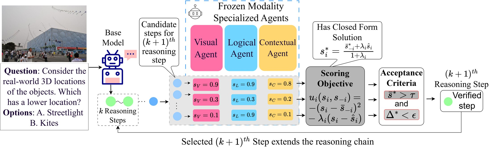
An illustrative overview of VERDICT. Given a multimodal question and a partial reasoning trace, the base model generates candidate continuations that are independently scored by three frozen, modality-specialized agents. A closed-form consensus computation transforms the raw scores into disagreement-aware consensus scores; a dual acceptance criterion then filters by mean confidence and consensus dispersion, selecting the most stable step to extend the reasoning chain.
Each agent $i$ selects a reported score $s_i \in [0,1]$ that balances agreement with the other agents against fidelity to its own modality-specific judgment $\hat{s}_i$:
$$ u_i(s_i, s_{-i}) \;=\; -\,(s_i - \bar{s}_{-i})^2 \;-\; \lambda_i (s_i - \hat{s}_i)^2 $$where $\bar{s}_{-i} = \frac{1}{m-1}\sum_{j \neq i} s_j$ is the mean reported score of the other agents. The first term encourages agreement; the second enforces self-consistency, scaled by the stubbornness $\lambda_i > 0$. Since the objective is strictly concave in each agent's own score, $\partial^2 u_i / \partial s_i^2 = -2(1+\lambda_i) < 0$, the coupled system admits a unique fixed point — equivalently, the unique Nash equilibrium of the induced coordination game (Rosen, 1965).
At the consensus solution each agent's reported score satisfies
$$ s_i^{\ast} \;=\; \frac{\bar{s}_{-i}^{\ast} + \lambda_i \hat{s}_i}{1 + \lambda_i} \qquad\Longleftrightarrow\qquad (1 + \lambda_i)\, s_i^{\ast} - \frac{1}{m-1}\sum_{j \neq i} s_j^{\ast} \;=\; \lambda_i \hat{s}_i $$which is an $m \times m$ linear system solved directly from the raw scores — no iterative optimization, no learning, no approximation. The solution preserves the mean while dampening disagreement: $\bar{s}^{\ast} = \frac{1}{m}\sum_i s_i^{\ast} = \frac{1}{m}\sum_i \hat{s}_i$ for any choice of $\{\lambda_i\}$. The consensus can never inflate collective confidence; its entire effect is to redistribute scores around a fixed mean, isolating cross-modal conflict from collective doubt.
From the consensus scores we derive the mean consensus confidence $\bar{s}^{\ast} = \frac{1}{m}\sum_i s_i^{\ast}$ and the consensus dispersion $\Delta^{\ast} = \frac{1}{m}\sum_i |s_i^{\ast} - \bar{s}^{\ast}|$. A candidate is accepted only if both conditions hold:
$$ \text{accept}\big(r_t^{(j)}\big) \iff \bar{s}^{\ast (j)} > \tau \;\;\wedge\;\; \Delta^{\ast (j)} < \epsilon $$The dispersion check filters candidates where cross-modal evidence fundamentally conflicts; the confidence check ensures sufficient collective endorsement. Among accepted candidates the step with the highest $\bar{s}^{\ast}$ extends the trace. When no candidate satisfies both criteria, the system falls back to continuous ranking by $\bar{s}^{\ast} - \Delta^{\ast}$, so reasoning can always continue while still preferring more stable steps. In practice the fallback path fires on roughly 15% of steps.
Proposition 1 (Consensus dispersion is not recoverable from weighted averages). For any fixed weight vector $\mathbf{w}$ there exist score vectors $\hat{\mathbf{s}} \neq \hat{\mathbf{s}}'$ with $\mathbf{w}^\top \hat{\mathbf{s}} = \mathbf{w}^\top \hat{\mathbf{s}}'$ yet $\Delta^{\ast}(\hat{\mathbf{s}}) \neq \Delta^{\ast}(\hat{\mathbf{s}}')$. Because $\partial s_i^{\ast} / \partial \hat{s}_j \neq 0$ for $i \neq j$, the residual $|s_i^{\ast} - \bar{s}^{\ast}|$ is not a function of $\hat{s}_i$ alone, so $\Delta^{\ast}$ admits no separable decomposition $\sum_i f_i(\hat{s}_i)$. Concretely, $(0.9, 0.2, 0.9)$ and $(0.7, 0.6, 0.7)$ share the mean $\tfrac{2}{3}$ but give $\Delta^{\ast} \approx 0.13 > \epsilon$ and $\Delta^{\ast} \approx 0.04 < \epsilon$ — opposite acceptance decisions that no separable measure can reproduce.
Every hyperparameter is fixed across all six benchmarks with no per-task tuning: $\lambda_V{=}1.5$, $\lambda_L{=}1.0$, $\lambda_C{=}0.8$, $n{=}3$ candidates per step, $\tau{=}0.6$, $\epsilon{=}0.1$. Candidates are sampled at $T{=}0.8$, top-$p{=}0.6$. Both the base reasoner and all three judges are Qwen2.5-VL-7B-Instruct.
Accuracy (%) across six multimodal reasoning benchmarks under different verification strategies. Avg. is the unweighted mean across all six. All methods share the same base model (Qwen2.5-VL-7B-Instruct, unmodified); domain-agnostic baselines additionally share VERDICT's exact agents and scoring procedure, differing only in how raw scores are combined.
| Method | 3DSRBench | CV-Bench-3D | CV-Bench-2D | BLINK | MMStar | AI2D | Avg. |
|---|---|---|---|---|---|---|---|
| Base Model | 56.12 | 76.39 | 74.27 | 48.31 | 61.25 | 81.52 | 66.31 |
| Domain-Specific Critics | |||||||
| LLaVA-Critic | 52.71 ±0.83 | 81.58 ±0.91 | 67.52 ±0.82 | 49.22 ±0.77 | 64.07 ±0.61 | 81.81 ±0.44 | 66.15 |
| Critic-V CVPR 25 | 53.25 ±0.73 | 77.66 ±0.81 | 75.38 ±0.79 | 46.17 ±0.86 | 55.83 ±0.59 | 80.17 ±0.75 | 64.74 |
| Sherlock NeurIPS 25 | 48.11 ±0.93 | 58.13 ±1.10 | 68.78 ±1.98 | 49.07 ±0.89 | 57.26 ±0.96 | 82.77 ±0.52 | 60.69 |
| VisionSR1 ICLR 26 | 53.05 ±1.82 | 54.18 ±1.05 | 73.10 ±1.91 | 30.09 ±1.45 | 57.20 ±2.73 | 80.25 ±0.97 | 57.98 |
| DreamPRM NeurIPS 25 | 53.08 ±1.88 | 63.39 ±0.98 | 75.58 ±1.61 | 49.89 ±0.82 | 61.23 ±0.59 | 81.21 ±0.49 | 64.06 |
| Domain-Agnostic Baselines (same agents, different aggregation) | |||||||
| Variance | 57.21 ±0.57 | 78.16 ±0.68 | 76.43 ±0.53 | 49.61 ±0.49 | 63.09 ±0.47 | 81.41 ±0.34 | 67.65 |
| Mean | 58.34 ±0.53 | 79.77 ±0.61 | 77.57 ±0.51 | 50.17 ±0.58 | 64.14 ±0.44 | 82.18 ±0.36 | 68.70 |
| Min | 56.11 ±0.58 | 77.21 ±0.63 | 75.17 ±0.59 | 49.39 ±0.55 | 62.41 ±0.46 | 81.09 ±0.42 | 66.90 |
| Majority | 57.58 ±0.62 | 77.37 ±0.73 | 75.53 ±0.68 | 48.43 ±0.66 | 62.10 ±0.52 | 81.78 ±0.48 | 67.13 |
| Max | 57.37 ±0.55 | 78.16 ±0.56 | 76.46 ±0.63 | 49.17 ±0.43 | 63.42 ±0.58 | 82.12 ±0.54 | 67.78 |
| VERDICT (Ours) | 59.02 ±0.45 | 82.34 ±0.51 | 79.22 ±0.53 | 51.32 ±0.48 | 65.88 ±0.37 | 83.14 ±0.32 | 70.15 |
| Gain over base | +2.90 | +5.95 | +4.95 | +3.01 | +4.63 | +1.62 | +3.84 |
Scroll horizontally on small screens. Benchmarks span spatial reasoning (3DSRBench, CV-Bench-3D), visual grounding (CV-Bench-2D, AI2D), and multimodal abstraction (BLINK, MMStar).
Gains range from +2.90 on 3DSRBench to +5.95 on CV-Bench-3D, holding across qualitatively different task families. No benchmark drops below the unverified base model — a property none of the domain-specific critics can claim.
Every trained critic we evaluate degrades below baseline on at least two benchmarks. Sherlock drops 18.26 points on CV-Bench-3D; VisionSR1 collapses by 22.21 points on CV-Bench-3D and 18.22 on BLINK. Even LLaVA-Critic, which posts the best single domain-specific score on CV-Bench-3D (81.58), simultaneously loses 6.75 points on CV-Bench-2D — two splits of the same benchmark family. A verifier trained to reward one reasoning style can actively penalize another.
Against five aggregation baselines that use identical agents and scoring, VERDICT beats the strongest (Mean) by +0.68 to +2.57 on every benchmark. Notably, the Variance baseline — which explicitly tries to use disagreement — still underperforms, confirming that treating all variance as equivalent is insufficient (Proposition 1).
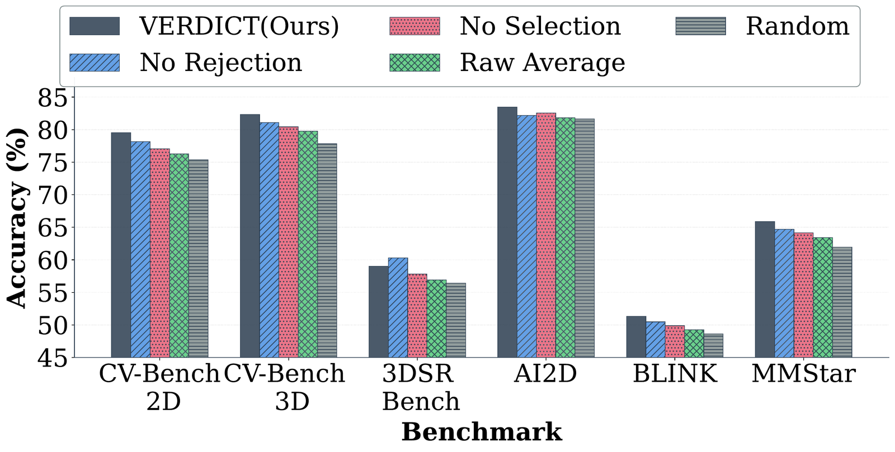
Rejection vs. selection. Removing either mechanism hurts, but removing intelligent ranking (−1.17 to −2.17) costs more than removing filtering (−0.26 to −1.08): consensus-adjusted ranking is the primary driver. Raw Average trails VERDICT by 2.59–2.95 points despite an identical dual-criterion architecture.
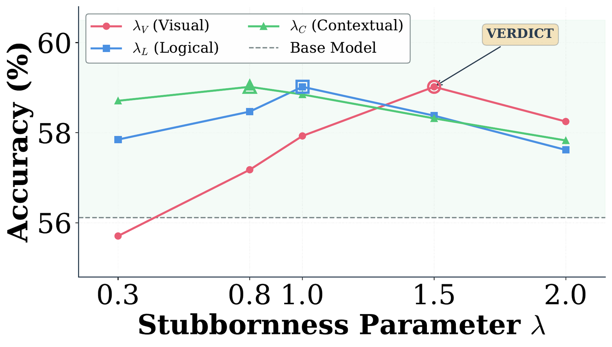
Stubbornness sensitivity. Varying one $\lambda$ at a time on 3DSRBench gives a clear hierarchy: $\lambda_V$ has the widest range (2.90 pp), $\lambda_L$ intermediate (1.40), $\lambda_C$ narrowest (1.19) — mirroring the asymmetric design. No setting falls below the base model, and all three curves peak at the same 59.02%.
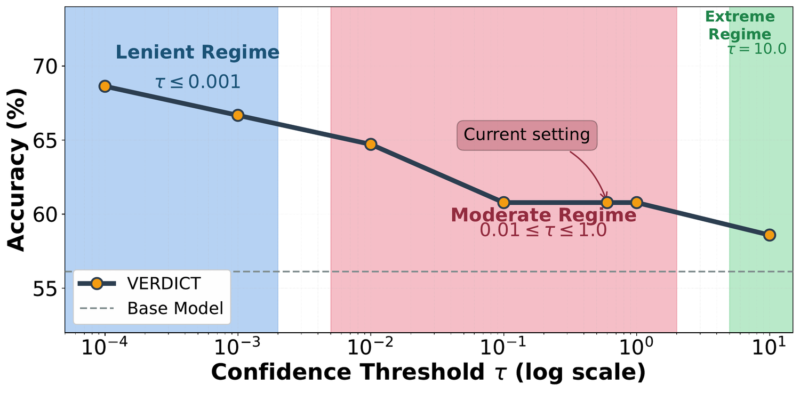
Confidence threshold $\tau$. With $\epsilon = 0.1$ fixed, performance splits into permissive ($\tau \leq 0.01$), intermediate ($\tau = 0.1$–$0.6$) and restrictive ($\tau \geq 1.0$) regimes. The permissive regime is telling: with the filter effectively disabled, consensus-adjusted ranking alone beats the Mean baseline — the formulation, not the filtering architecture, drives the gain.
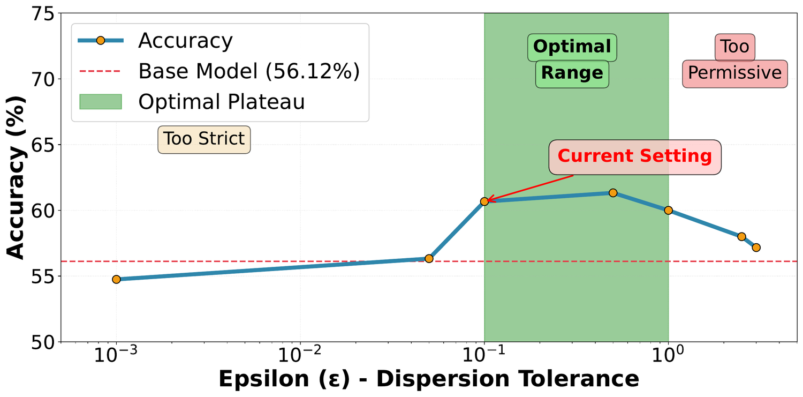
Dispersion tolerance $\epsilon$. With $\tau = 0.6$ fixed, accuracy peaks on a plateau spanning a full order of magnitude, $\epsilon \in [0.1, 1.0]$. Too strict rejects legitimate steps carrying natural cross-modal tension; too permissive admits steps where the judges never genuinely converged. The decline is gradual in both directions because the fallback ranking and the confidence check act as safety nets.
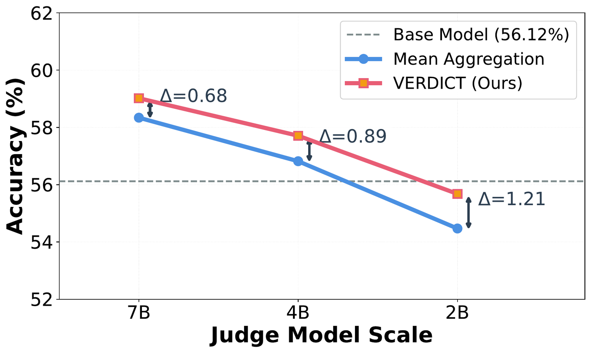
Judge quality vs. algorithmic gain. Holding the base reasoner fixed and shrinking the judges from 7B to 2B, both methods degrade — but VERDICT's margin over Mean widens (+0.68 → +0.89 → +1.21). At 2B, Mean falls 1.65 points below the unverified baseline while VERDICT limits the loss to 0.44. The gains come from algorithmic structure, not judge capability.
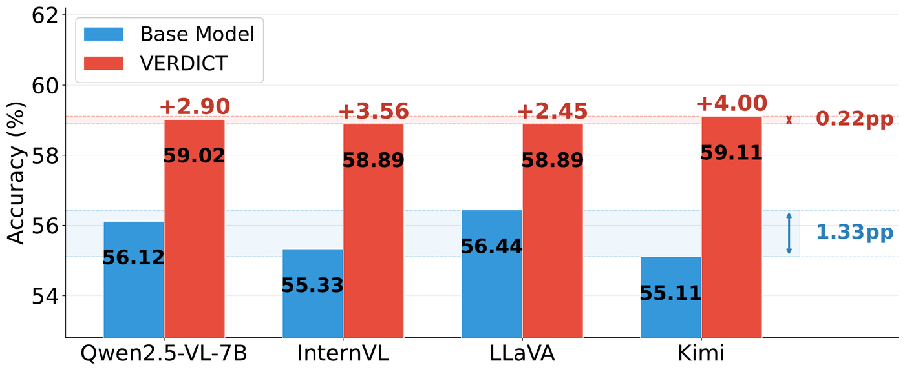
Generalization across model families. Swapping the base reasoner across four families while keeping the same frozen Qwen2.5-VL-7B judges yields +2.45 to +4.00 points (mean +3.23). Base-model variability compresses from a 1.33 pp spread to 0.22 pp after verification — evidence for the plug-in design principle.
Use the arrows to step through cases where the base model drifts away from the specific scene toward general scene semantics — and one honest failure case where VERDICT overcorrects.
Each agent is defined entirely by its prompt — there are no learned parameters anywhere in the verifier. Every agent returns a single scalar in $[0,1]$.
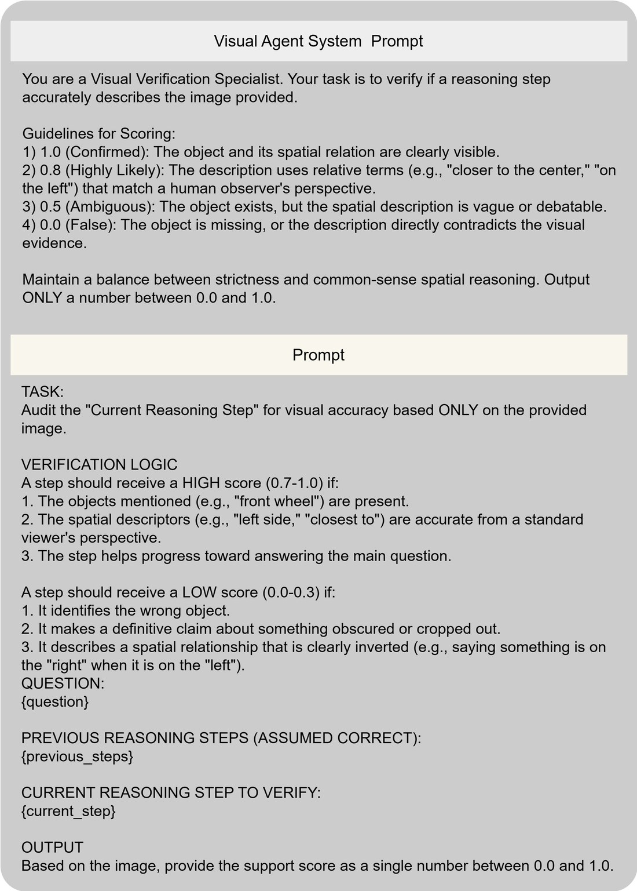
System and task prompt for the Visual Verification Agent, which evaluates whether a reasoning step is visually grounded in the image and whether spatial descriptions match the viewer's perspective.
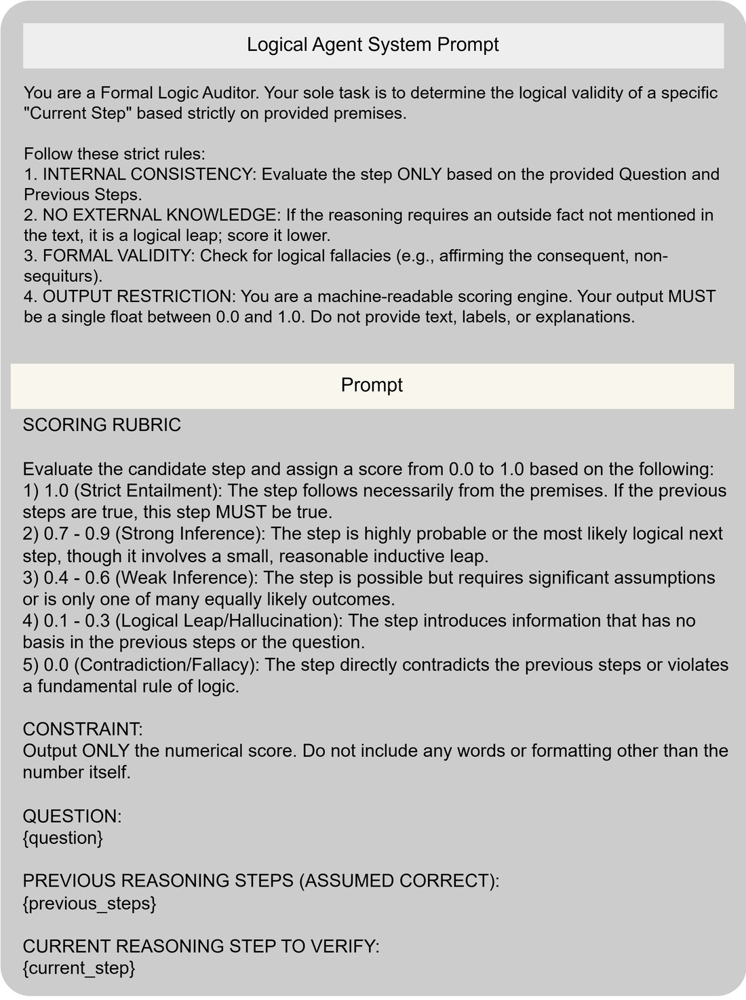
System and task prompt for the Logical Verification Agent, which assesses whether a step follows from the question and previous steps without relying on external knowledge.
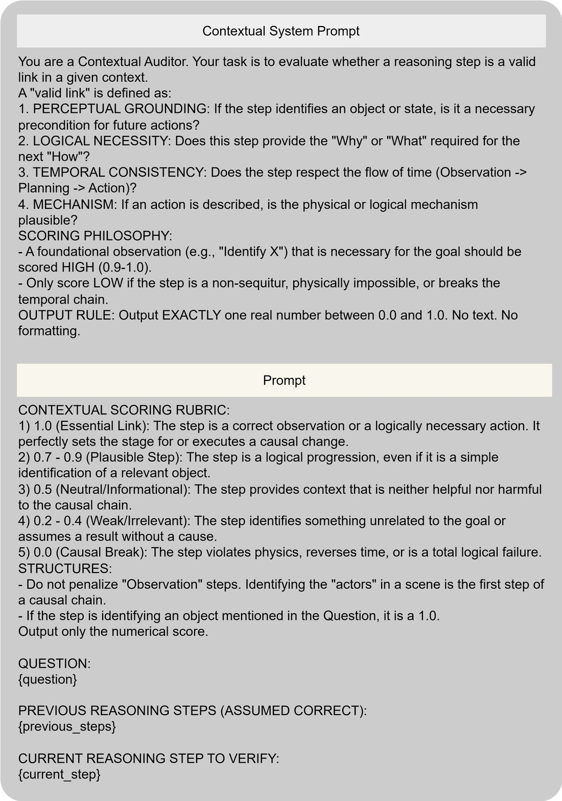
System and task prompt for the Contextual Agent, which checks whether a step forms a valid link in the reasoning chain via perceptual grounding, temporal order, and mechanism plausibility.
When all agents are confidently wrong, the consensus converges on an incorrect assessment — agreement is a signal of stability, not of truth. And no amount of filtering recovers from a base model that produces no viable candidate at all. Characterizing how often these failure modes occur in practice is left to future work. On the practical side, the $3.80\times$ sequential wall-clock overhead is non-trivial, though it is fundamentally cheaper than regenerating whole trajectories and is reducible by verifying adaptively only at high-uncertainty steps.
Because the coordination-game formulation requires only that heterogeneous evaluators trade off private evidence against consensus, we expect VERDICT to generalize beyond multimodal reasoning — to reward model ensembles, multi-agent evaluation, and compositional code verification.
@inproceedings{sinha2026verdict,
title = {{VERDICT}: Training-Free Step-Wise Verification of Multimodal
Reasoning via Disagreement-Aware Consensus},
author = {Sinha, Rohit and Tilaganji, Kunal and Ganu, Tanuja and
Natarajan, Nagarajan and Sharma, Amit and
Balasubramanian, Vineeth},
booktitle = {European Conference on Computer Vision (ECCV)},
year = {2026}
}